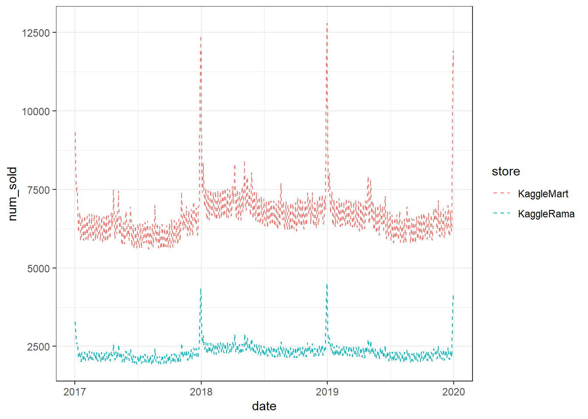

train_data[
,
`:=`(year = as.factor(year(date)), month = as.factor(month(date)), day = as.factor(day(date)), weekday = as.factor(weekdays(date)))
]EDA
This document is an EDA of the data. This document creates no output; changes to data will be made in separate scripts.
Let’s initially create some time variables to be able to analyse seasonality within year, month and week.
Variation
Questions
What is the range of values and does it match expectations?
Are there missing or odd values that we need to impute (or delete faulty records / variables)?
Which values are the most common and why?
Which values are rare (outliers) and why? Are there perhaps faulty records?
Are there any unusual patterns that don’t match expectations (multimodel distribution / clusters for example)
summary(train_data) row_id date country store
Min. : 0 Min. :2017-01-01 Belgium:8760 KaggleMart:26280
1st Qu.:13140 1st Qu.:2017-10-01 France :8760 KaggleRama:26280
Median :26280 Median :2018-07-02 Germany:8760
Mean :26280 Mean :2018-07-02 Italy :8760
3rd Qu.:39419 3rd Qu.:2019-04-02 Poland :8760
Max. :52559 Max. :2019-12-31 Spain :8760
product num_sold year
Kaggle Advanced Techniques :13140 Min. : 19.0 2017:17520
Kaggle for Kids: One Smart Goose:13140 1st Qu.: 89.0 2018:17520
Kaggle Getting Started :13140 Median :142.0 2019:17520
Kaggle Recipe Book :13140 Mean :185.9
3rd Qu.:269.0
Max. :986.0
month day weekday
1 : 4464 1 : 1728 Friday :7488
3 : 4464 2 : 1728 Monday :7536
5 : 4464 3 : 1728 Saturday :7488
7 : 4464 4 : 1728 Sunday :7536
8 : 4464 5 : 1728 Thursday :7488
10 : 4464 6 : 1728 Tuesday :7536
(Other):25776 (Other):42192 Wednesday:7488 No missing values. Only categorical predictors and no numeric. Label takes reasonable values, although heavy tailed. Number of observations of each category is uniform, suggesting one record pr. day pr. sub group without any missing days or duplicates - let’s quickly confirm this.
# correct number of days
nrow(train_data[ , .N, by = date]) == (nrow(train_data) / (6 * 2 * 4))[1] TRUE# consistent number of obs pr day
train_data[ , .N, by = date]$N %>% unique[1] 48By year
train_data %>%
ggplot(aes(x = date, y = num_sold)) +
geom_ma(ma_fun = SMA, n = 31) 
train_data[
,
.(num_sold = sum(num_sold)),
by = year
] year num_sold
1: 2017 3112163
2: 2018 3425424
3: 2019 3232879There is definitely seasonality, especially around Christmas, and probably within each month / week as well. Some variation from year to year - that is going to be hard to model, unless one of the predictors embodies this relation.
train_data %>%
ggplot(aes(x = date, y = num_sold)) +
geom_ma(ma_fun = SMA, n = 31) +
facet_wrap(~ country)train_data %>%
ggplot(aes(x = date, y = num_sold)) +
geom_ma(ma_fun = SMA, n = 31) +
facet_wrap(~ store)train_data %>%
ggplot(aes(x = date, y = num_sold)) +
geom_ma(ma_fun = SMA, n = 31) +
facet_wrap(~ product)Each country exhibits the same pattern, which is to be expected since they are all European countries, but there are large differences in the volume of books sold.
The same goes for store.
The product though has a lot of seasonality, conveniently asynchronous. Kaggle for Kids evidently explains the overall larger volume, which means that we fortunately do not have to include a time-variable accounting for trends which are not accounted for by other predictors.
We thus include main effects of country and store and an interaction effect of product with yearly seasonality (we might use week or day of the year with splines or similar).
By month
train_data %>%
group_by(day, month) %>%
summarize(
num_sold = sum(num_sold)
) %>%
ggplot() +
geom_point(aes(x = day, y = num_sold)) +
facet_wrap(~ month)`summarise()` has grouped output by 'day'. You can override using the `.groups`
argument.
Christmas and January are of course extraordinary. There seems to be a strong weekly pattern (weekend vs. workdays). Other than that, there does not seem to a be a large difference in volume between the months.
By week
train_data %>%
group_by(
weekday
) %>%
summarize(
num_sold = sum(num_sold)
) %>%
ggplot() +
geom_point(aes(x = weekday, y = num_sold))
Covariation
train_data %>%
ggplot(aes(x = date, y = num_sold)) +
geom_ma(ma_fun = SMA, n = 31) +
facet_wrap(~ product + store)
Interaction effects between product, store and country does not seem to be necessary - the effect of product does not change from country to county or from store to store (the other plot are not included here in order not to overcrowd the analysis).
TL;DR: Conclusions
Summary of key findings to be implemented and taken into account in the further modeling:
Main effects of store and country should be included
There is strong seasonality for product, so we might include interaction between day or week of year and product and use a non-linear model.
A weekend indicator is a useful variable.
A variable indicating Christmas and first week of January is useful.